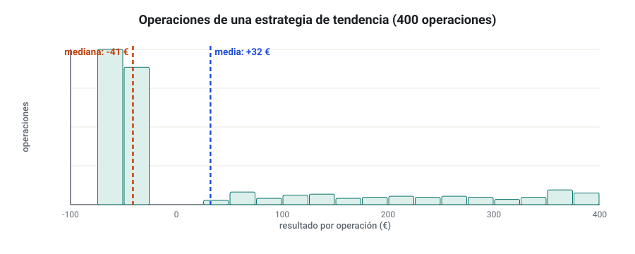
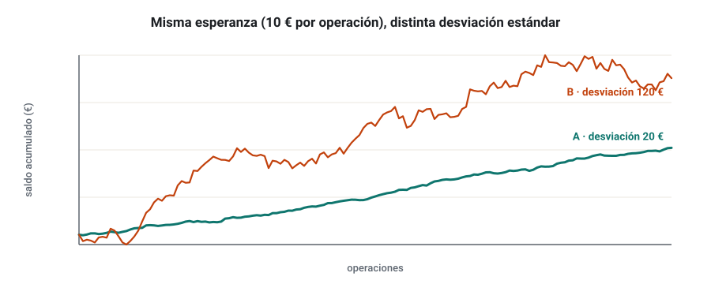
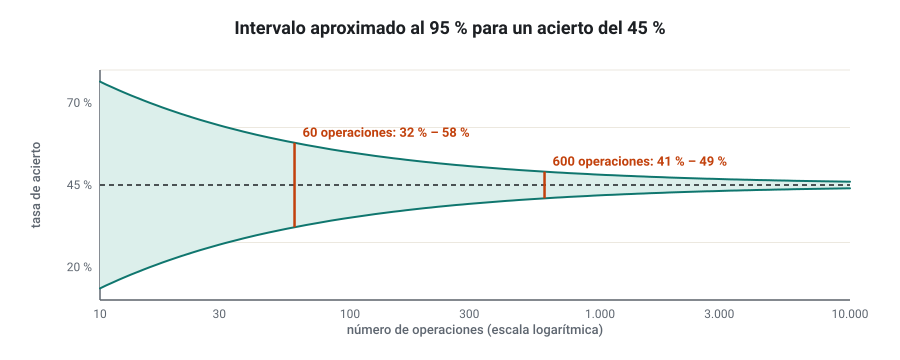
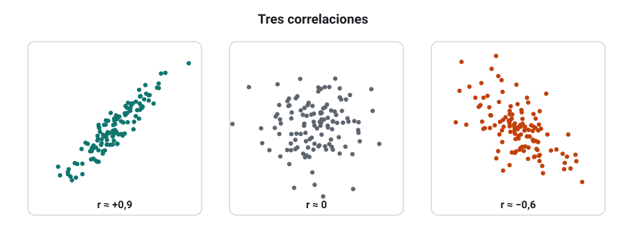
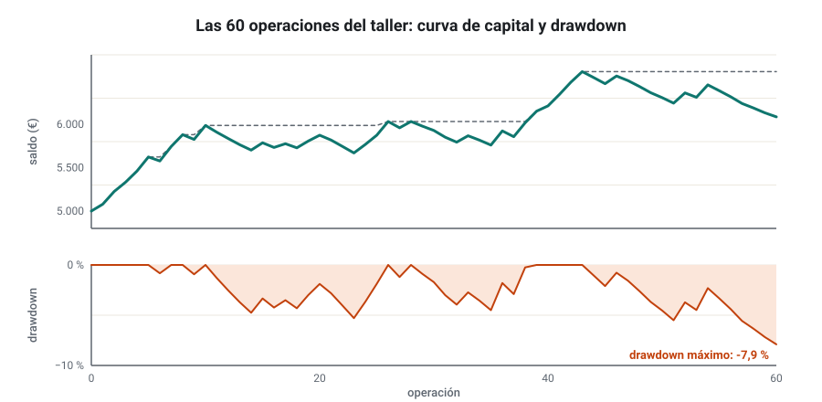
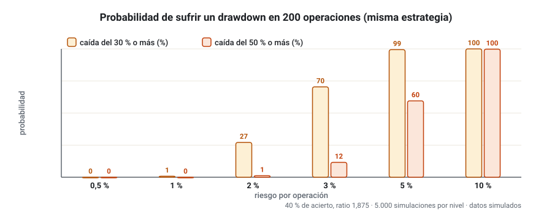
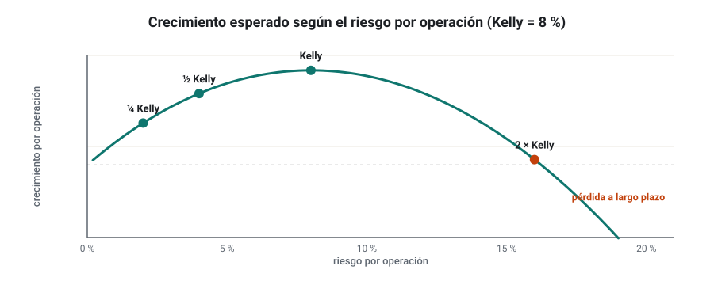

SEMANA 04 · ETAPA 1 · FUNDAMENTOS
Estadística y gestión del riesgo
Presentación de la semana
La semana pasada aprendiste a calcular la esperanza de una estrategia. Esta semana aprenderás a desconfiar de ella con método: a medir cuánto se dispersan los resultados, a saber si una muestra es suficiente, a leer las métricas que verás en cada informe de StrategyQuant X y, sobre todo, a decidir cuánto arriesgar para sobrevivir a las malas rachas. Es la última semana de fundamentos: al terminarla tendrás todas las herramientas para evaluar una estrategia antes de construir la primera.
Objetivos
Al terminar la semana sabrás:
- Calcular e interpretar media, mediana, varianza y desviación estándar.
- Estimar la incertidumbre de una muestra y decidir si un resultado es significativo.
- Medir la relación entre dos series con la correlación y la regresión.
- Calcular e interpretar las métricas de trading: tasa de acierto, profit factor, esperanza, drawdown, Sharpe y Sortino.
- Calcular el tamaño de posición a partir del riesgo por operación.
- Explicar el riesgo de ruina, las rachas y el criterio de Kelly, y elegir un riesgo por operación prudente.
- Construir una hoja de cálculo que calcule todas estas métricas a partir de una lista de operaciones.
Plan de la semana (22–25 horas)
| Bloque | Horas | Qué harás |
|---|---|---|
| Clases | 6 | Siete lecciones: lectura y vídeos |
| Prácticas | 12 | Taller de métricas, ejercicios y simulaciones |
| Investigación y evaluación | 4 | Investigación I-04, entrega y examen |
| Revisión y planificación | 2 | Glosario, cuaderno, repaso de la etapa 1 y plan de la semana 5 |
Qué necesitas
- Tu hoja de cálculo. Esta semana construirás una plantilla que reutilizarás en todo el curso.
- El archivo de operaciones del taller: s04-operaciones.csv (60 operaciones simuladas).
- Tu cuaderno de investigación y la hoja de la semana 3.
Criterio para desbloquear la semana 5
Tener en estado APROBADO, con un 80 % o más cada uno:
- ☐ Examen de la semana 4
- ☐ Entrega práctica: plantilla de métricas con las 60 operaciones del taller
- ☐ Investigación I-04: pasos 1 a 4, 7 y 8 documentados
Media, mediana, varianza y desviación estándar
Formato: clase de 35 minutos · Lectura: 35 minutos
Dos números para resumir una lista
Cuando tienes 200 operaciones, necesitas resumirlas. Hacen falta al menos dos números: uno que diga dónde está el centro y otro que diga cuánto se alejan los datos de ese centro.
Media y mediana
- La media (o media aritmética) es la suma de los valores dividida entre su número.
- La mediana es el valor que queda en medio cuando los ordenas: la mitad de los datos está por debajo y la otra mitad por encima.
Con los resultados 50, −30, −30, −30, 200 €, la media es 160 / 5 = 32 € y la mediana es −30 €. ¿Cuál describe mejor la estrategia? Las dos dicen algo: la media dice que, en conjunto, se gana; la mediana dice que la operación típica pierde. Es el retrato de una estrategia de tendencia: pierde a menudo y gana mucho de vez en cuando.

Varianza y desviación estándar
La varianza mide la dispersión: es la media de los cuadrados de las distancias a la media. Con una muestra de n datos se divide entre n − 1:
La desviación estándar es su raíz cuadrada, y tiene la ventaja de estar en las mismas unidades que los datos (euros, pips o porcentaje):
En la hoja de cálculo: =PROMEDIO(), =MEDIANA(), =VAR.S() y =DESVEST.M() (en inglés: AVERAGE, MEDIAN, VAR.S, STDEV.S).

Valores atípicos
Una sola operación enorme puede mover mucho la media y la desviación. Si al quitar la mejor operación la estrategia pasa de ganar a perder, no tienes una estrategia: tienes un golpe de suerte. Es una comprobación sencilla que harás siempre.
Comprueba que lo has entendido
- Calcula la media y la mediana de: 30, −20, −20, 15, −20, 90.
- ¿Por qué se divide entre n − 1 al calcular la varianza de una muestra?
- ¿Qué te dice que la desviación estándar sea mucho mayor que la media?
Muestras, tamaño de muestra y significación
Formato: clase de 40 minutos · Lectura: 40 minutos
Tu backtest es una muestra
Las operaciones de un backtest son una muestra de todas las operaciones que la estrategia haría si funcionara siempre igual (la población). La media de tu muestra es solo una estimación de la media real, y tiene un error.
El error estándar
El error estándar de la media mide cuánto puede variar la media de una muestra a otra:
Disminuye con la raíz del número de operaciones: para reducir el error a la mitad, necesitas cuatro veces más operaciones.
¿Es la ventaja distinta de cero?
Para saber si una media positiva puede deberse a la suerte, compara la media con su error estándar. El cociente se llama estadístico t:
Como regla práctica, si t es mayor que 2, es poco probable (en torno a un 5 % o menos) que una estrategia sin ventaja hubiera dado un resultado así por azar. Decimos que el resultado es estadísticamente significativo. Si t es menor que 2, no puedes descartar que la ventaja sea suerte.
¿Cuántas operaciones necesitas?
Despejando n de la fórmula de t, el número de operaciones necesario para que una ventaja dada sea significativa (t = 2) es aproximadamente:
En el ejemplo: (2 × 93 / 18)² ≈ 107 operaciones. Y eso si la media y la desviación reales son las que has medido, que tampoco lo sabes.
La incertidumbre de la tasa de acierto
Con la tasa de acierto ocurre lo mismo. Un intervalo aproximado al 95 % es:
Con un 45 % de acierto en 60 operaciones: 0,45 ± 2 × √(0,45 × 0,55 / 60) = 0,45 ± 0,128. La tasa real podría estar entre el 32 % y el 58 %. Con 600 operaciones, el intervalo se estrecha a ±4 puntos.

Comprueba que lo has entendido
- Una estrategia tiene 150 operaciones, media 6 € y desviación 60 €. Calcula el estadístico t. ¿Es significativa?
- ¿Cuántas operaciones más necesitas para reducir el error estándar a la mitad?
- ¿Por qué una t mayor que 2 no basta si has probado cientos de estrategias?
Correlación y regresión
Formato: clase de 30 minutos · Lectura: 30 minutos
La correlación
La correlación (de Pearson) mide si dos series se mueven juntas. Va de −1 a +1:
- +1: se mueven exactamente en la misma dirección.
- 0: no hay relación lineal.
- −1: se mueven exactamente en direcciones opuestas.
En la hoja de cálculo: =COEF.DE.CORREL(A:A;B:B) (CORREL en inglés).

Para qué la usarás
- Carteras (semanas 13 y 14): combinar estrategias poco correlacionadas reduce el drawdown conjunto. Dos estrategias con correlación 0,9 son casi la misma apuesta.
- Exposición duplicada: EUR/USD y GBP/USD suelen estar muy correlacionados. Comprar los dos a la vez es casi doblar el riesgo.
- Validar ideas: si una condición de tu estrategia apenas está correlacionada con el resultado, probablemente sobra.
Correlación no es causalidad
Que dos cosas se muevan juntas no significa que una cause la otra. Pueden depender de un tercer factor, o ser casualidad: si comparas suficientes series, encontrarás correlaciones altas sin ningún sentido.
La regresión lineal
La regresión lineal busca la recta que mejor describe cómo cambia una serie (y) cuando cambia otra (x):
La pendiente b dice cuánto cambia y por cada unidad de x. Si comparas las rentabilidades diarias de una acción con las de su índice, b es la beta: con beta 1,5, la acción se mueve de media un 1,5 % por cada 1 % del índice. El coeficiente de determinación R² (la correlación al cuadrado) indica qué parte de la variación de y explica la recta.
En la hoja: =PENDIENTE(), =INTERSECCION.EJE() y =COEFICIENTE.R2() (SLOPE, INTERCEPT, RSQ).
La regresión sobre la curva de capital
Un uso muy práctico: haz una regresión del saldo acumulado contra el número de operación. Una pendiente positiva con un R² alto indica una curva de capital estable; un R² bajo, una curva irregular aunque termine arriba. StrategyQuant X usa una idea parecida en su métrica de estabilidad.
Comprueba que lo has entendido
- ¿Qué significa una correlación de −0,8 entre dos estrategias?
- Una acción tiene una beta de 0,6 respecto a su índice. Si el índice cae un 5 %, ¿cuánto cabe esperar que caiga la acción?
- Pon un ejemplo de correlación sin causalidad.
Métricas de trading: tasa de acierto, profit factor, esperanza, drawdown, Sharpe y Sortino
Formato: clase de 45 minutos · Lectura: 45 minutos
Las métricas de un informe
Cada informe de StrategyQuant X, de MetaTrader o de una empresa de fondeo muestra decenas de métricas. Estas son las que más importan:
| Métrica | Fórmula | Qué te dice |
|---|---|---|
| Beneficio neto | Suma de todas las operaciones | Resultado total, sin contexto |
| Tasa de acierto | Ganadoras / total | Con qué frecuencia gana (necesita el ratio para tener sentido) |
| Ratio medio | Ganancia media / pérdida media | Cuánto gana cuando gana, frente a lo que pierde |
| Profit factor | Beneficio bruto / pérdida bruta | Euros ganados por cada euro perdido |
| Esperanza | Beneficio neto / número de operaciones | Resultado medio por operación |
| Drawdown máximo | Mayor caída desde un máximo | El peor momento que habrías vivido |
| Factor de recuperación | Beneficio neto / drawdown máximo | Cuánto ganas por cada euro de caída |
| Sharpe | Rentabilidad media / desviación | Rentabilidad por unidad de variabilidad |
| Sortino | Rentabilidad media / desviación a la baja | Igual, pero solo castiga la variabilidad negativa |
El profit factor
Un PF de 1 es no ganar nada. Como orientación para estrategias de StrategyQuant X, muchos investigadores exigen un PF de al menos 1,3–1,5 en el backtest con costes, porque fuera de muestra suele bajar. Un PF muy alto (por encima de 3) con pocas operaciones es una señal de alarma, no de calidad: suele indicar sobreoptimización.
El drawdown
El drawdown es la caída desde el último máximo del saldo. El drawdown máximo es la mayor de todas. Se expresa en dinero o en porcentaje del máximo anterior.

Fíjate también en la duración: cuánto tiempo pasa desde un máximo hasta que se supera. Un drawdown del 10 % que dura un año es psicológicamente más duro que uno del 15 % que se recupera en un mes.
Sharpe y Sortino
El ratio de Sharpe compara la rentabilidad con su variabilidad. Con rentabilidades periódicas (por ejemplo, mensuales):
donde r_f es la rentabilidad sin riesgo del periodo (puedes usar 0 para simplificar al comparar estrategias) y k el número de periodos por año: 12 si son meses, unos 252 si son días de bolsa. El factor √k anualiza el ratio.
El ratio de Sortino es igual, pero en el denominador solo usa la desviación a la baja, que mide la dispersión de los resultados negativos:
El Sortino no castiga las ganancias grandes, que también son «variabilidad», así que es más justo con las estrategias de asimetría positiva.
Como orientación con datos reales y costes, un Sharpe anual por encima de 1 es bueno y por encima de 2 es excepcional. En un backtest, cifras mucho mayores suelen indicar sobreoptimización o costes mal configurados.
Comprueba que lo has entendido
- Beneficio bruto 4.200 €, pérdida bruta 3.000 €. ¿Cuál es el profit factor?
- El saldo pasa de 10.000 € a un máximo de 12.500 €, cae a 10.600 € y sube a 13.000 €. ¿Cuál es el drawdown máximo en euros y en porcentaje?
- ¿Por qué el Sortino puede ser mucho mayor que el Sharpe en una estrategia de tendencia?
Tamaño de posición y riesgo por operación
Formato: clase de 35 minutos · Lectura: 35 minutos
El riesgo lo decides tú
Ya sabes calcular un tamaño de posición con una regla de tres. Esta lección explica cuánto arriesgar. El método que usarás en todo el curso es el riesgo fijo por operación (fixed fractional): en cada operación arriesgas el mismo porcentaje del capital, y el tamaño se calcula a partir de la distancia del stop.
Ventajas del método:
- Las pérdidas tienen tamaño conocido: cada operación perdedora cuesta lo mismo en porcentaje.
- El tamaño se adapta solo: si la cuenta crece, las posiciones crecen; si cae, se reducen. Así es casi imposible llegar a cero, aunque no a sufrir caídas profundas.
- El stop decide el tamaño, no al revés: si el stop es amplio, la posición es pequeña.
¿Cuánto arriesgar?
Una simulación con la estrategia de ejemplo de la semana 3 (40 % de acierto, ratio 1,875 y esperanza de 0,15 R) muestra qué pasa en 200 operaciones según el riesgo por operación:
| Riesgo por operación | Probabilidad de sufrir un drawdown del 30 % o más | Del 50 % o más |
|---|---|---|
| 0,5 % | Prácticamente 0 % | Prácticamente 0 % |
| 1 % | Alrededor del 1 % | Prácticamente 0 % |
| 2 % | Alrededor del 27 % | Alrededor del 1 % |
| 3 % | Alrededor del 70 % | Alrededor del 12 % |
| 5 % | Más del 99 % | Alrededor del 60 % |
| 10 % | Prácticamente seguro | Prácticamente seguro |
Resultados de 5.000 simulaciones por fila con datos ficticios; con otra estrategia las cifras cambian.

La misma estrategia, con la misma ventaja, es tranquila con un 1 % de riesgo y destructiva con un 5 %. El riesgo por operación es la decisión más importante que tomarás.
Las reglas de las empresas de fondeo
Las empresas de fondeo suelen limitar la pérdida diaria y la total (por ejemplo, un 5 % diario y un 10 % total). Con esos límites, un riesgo del 2 % por operación deja margen para solo dos o tres pérdidas en un día. Lo estudiarás en la semana 18.
Comprueba que lo has entendido
- Capital 8.000 €, riesgo 0,75 %, stop de 50 pips, pip de 1 lote 9,26 €. ¿Cuántos lotes?
- ¿Por qué con riesgo fijo por operación es muy difícil llegar a cero?
- Explica con la tabla por qué pasar del 1 % al 3 % de riesgo no triplica el peligro, sino que lo multiplica mucho más.
Riesgo de ruina, rachas y el criterio de Kelly
Formato: clase de 35 minutos · Lectura: 35 minutos
El riesgo de ruina
El riesgo de ruina es la probabilidad de perder tanto capital que ya no puedas (o no quieras) seguir. En la versión clásica, para apuestas de igual tamaño con ganancia igual a la pérdida:
donde A es la ventaja (probabilidad de ganar menos probabilidad de perder) y U el número de unidades de riesgo que tiene tu capital.
En la práctica, «ruina» no es llegar a cero: es la caída a partir de la cual abandonarías o la que te haría suspender una prueba de fondeo. Por eso, en el curso medirás el riesgo como probabilidad de un drawdown determinado, con simulaciones como la de la lección anterior.
Las rachas, otra vez
Recuerda la semana 3: con un 40 % de acierto, en 200 operaciones es normal una racha de 8 pérdidas o más. Con un 2 % de riesgo, 8 pérdidas seguidas son una caída de alrededor del 15 % (1 − 0,98⁸); con un 5 %, de un 34 %. Antes de elegir el riesgo, pregúntate: ¿cuánto caería mi cuenta con una racha de 10 pérdidas, y seguiría operando?
El criterio de Kelly
El criterio de Kelly calcula la fracción del capital que, arriesgada en cada operación, hace crecer la cuenta lo más rápido posible a largo plazo:
Con la estrategia de la semana 3 (p = 0,40, R = 1,875): f = 0,40 − 0,60 / 1,875 = 0,08*, es decir, un 8 % por operación.

Pero un 8 % por operación, según la tabla de la lección anterior, garantiza caídas del 50 %. ¿Por qué? Porque Kelly:
- Supone que conoces p y R exactamente, y solo los estimas (con mucho error, lección 2). Si sobreestimas la ventaja, apuestas de más, y apostar de más es peor que apostar de menos.
- Maximiza el crecimiento, no la comodidad: acepta drawdowns enormes.
Por eso los profesionales usan, como mucho, una fracción de Kelly (un cuarto o la mitad) y, en la práctica, límites fijos como los de este curso. Kelly sirve sobre todo como techo: si tu riesgo por operación se acerca a Kelly, estás arriesgando demasiado.
Comprueba que lo has entendido
- Calcula Kelly para p = 0,55 y R = 1,2.
- ¿Por qué apostar el doble de Kelly hace crecer la cuenta menos que apostar la mitad?
- Con un 1 % de riesgo, ¿cuánto cae tu cuenta tras 10 pérdidas seguidas?
Taller con hoja de cálculo: métricas de una lista de operaciones
Formato: taller guiado de 60 minutos · Práctica: 3–4 horas
En este taller construirás tu plantilla de métricas, que usarás para evaluar estrategias el resto del curso. Trabajarás con 60 operaciones simuladas de EUR/USD con una cuenta inicial de 5.000 €.
Paso 1 · Importa los datos
- Descarga s04-operaciones.csv. Está separado por punto y coma, con coma decimal.
- Ábrelo en tu hoja de cálculo. En Google Sheets: Archivo → Importar → Subir, con separador «punto y coma». En Excel: Datos → Desde texto/CSV.
- Comprueba que tienes 60 filas y que la columna
resultado_eurse reconoce como número.
Paso 2 · Columnas auxiliares
Añade junto a los datos:
| Columna | Fórmula (fila 2) | Para qué |
|---|---|---|
| Saldo | =5000+F2 en la primera; =G2+F3 en las siguientes |
Curva de capital |
| Máximo hasta aquí | =MAX($G$2:G2) (con 5.000 incluido) |
Referencia del drawdown |
| Drawdown € | =H2-G2 |
Caída desde el máximo |
| Drawdown % | =I2/H2 |
Caída en porcentaje |
| Ganadora | =SI(F2>0;1;0) |
Para contar aciertos |
Paso 3 · Panel de métricas
En otra pestaña, calcula con fórmulas (nunca a mano):
- Número de operaciones, ganadoras y perdedoras.
- Tasa de acierto e intervalo aproximado al 95 %.
- Beneficio neto, beneficio bruto, pérdida bruta y profit factor.
- Ganancia media, pérdida media y ratio R.
- Esperanza en euros y en R.
- Media, mediana y desviación estándar de las operaciones.
- Error estándar y estadístico t.
- Drawdown máximo en euros y en porcentaje, y factor de recuperación.
- Racha de pérdidas más larga (pista: una columna que sume 1 si pierde y vuelva a 0 si gana, y su máximo).
- Kelly.
- Mejor y peor operación, y el beneficio neto sin la mejor operación.
Paso 4 · Gráficos
Crea dos gráficos: la curva de capital (saldo) y el drawdown en porcentaje. Compáralos con la figura 4.5.
Paso 5 · Interpreta
Responde en tu cuaderno: ¿Tiene esta lista de operaciones una ventaja significativa? ¿Cuántas operaciones harían falta para saberlo? ¿Con qué riesgo por operación la operarías, y por qué?
Comprueba que lo has entendido
- ¿Coincide tu drawdown máximo con el de la figura 4.5?
- ¿Qué métrica te ha sorprendido más y por qué?
- ¿Qué cambiarías en la plantilla para reutilizarla con cualquier lista de operaciones?
Glosario de la semana
| Término | Inglés | Definición |
|---|---|---|
| Beta | Beta | Pendiente de la regresión de un activo contra su índice de referencia |
| Coeficiente de determinación | R squared | Parte de la variación de una serie que explica una regresión |
| Correlación | Correlation | Medida de −1 a +1 de cuánto se mueven juntas dos series |
| Criterio de Kelly | Kelly criterion | Fracción del capital que maximiza el crecimiento a largo plazo |
| Desviación a la baja | Downside deviation | Dispersión calculada solo con los resultados negativos |
| Drawdown | Drawdown | Caída del saldo desde su último máximo |
| Error estándar | Standard error | Variabilidad esperada de la media de una muestra |
| Estadístico t | t statistic | Media dividida entre su error estándar |
| Factor de recuperación | Recovery factor | Beneficio neto dividido entre el drawdown máximo |
| Media | Mean | Suma de los valores dividida entre su número |
| Mediana | Median | Valor central de los datos ordenados |
| Muestra | Sample | Parte de los datos con la que se estima el comportamiento de la población |
| Población | Population | Conjunto completo de resultados posibles |
| Profit factor | Profit factor | Beneficio bruto dividido entre pérdida bruta |
| Ratio de Sharpe | Sharpe ratio | Rentabilidad media dividida entre su desviación estándar, anualizada |
| Ratio de Sortino | Sortino ratio | Como el Sharpe, pero usando la desviación a la baja |
| Regresión lineal | Linear regression | Recta que mejor describe la relación entre dos series |
| Riesgo de ruina | Risk of ruin | Probabilidad de perder tanto capital que no se pueda seguir |
| Riesgo fijo por operación | Fixed fractional | Arriesgar el mismo porcentaje del capital en cada operación |
| Sesgo de selección | Selection bias | Error de elegir el mejor resultado entre muchos y creer que no es suerte |
| Significación estadística | Statistical significance | Resultado poco probable si no hubiera ventaja real |
| Varianza | Variance | Media de los cuadrados de las distancias a la media |
Ejercicios obligatorios
Resuélvelos en tu hoja de cálculo, mostrando las fórmulas. Se entregan con la práctica de la semana.
E1 · Centro y dispersión. Para las operaciones 40, −25, −25, 110, −25, −30, 65, −25, calcula la media, la mediana, la varianza y la desviación estándar muestrales. ¿Qué te dice la diferencia entre media y mediana?
E2 · Valor atípico. Repite la media del E1 sin la operación de 110 €. ¿Seguiría ganando la estrategia?
E3 · Significación. Una estrategia tiene 250 operaciones, una media de 9 € y una desviación de 70 €. Calcula el error estándar y el estadístico t. ¿Es significativa? ¿Cuántas operaciones necesitaría con una media de 5 € y la misma desviación?
E4 · Intervalo de acierto. Calcula el intervalo aproximado al 95 % de la tasa de acierto para: a) 38 % en 50 operaciones; b) 38 % en 500 operaciones.
E5 · Correlación. Dos estrategias tienen estos resultados mensuales (%): A: 2, −1, 3, 0, −2, 4; B: 1, −2, 2, 1, −3, 3. Calcula su correlación en la hoja. ¿Las combinarías para diversificar?
E6 · Drawdown. Con los saldos 10.000, 10.400, 10.900, 10.300, 9.800, 10.600, 11.200, 10.700, 11.500, calcula el drawdown máximo en euros y en porcentaje, y cuántos periodos tardó en recuperarse.
E7 · Sharpe y Sortino. Una estrategia tiene estas rentabilidades mensuales (%): 3, −1, 2, −2, 4, 1, −1, 2, 0, 3, −3, 2. Calcula el Sharpe y el Sortino anualizados con r_f = 0.
E8 · Tamaño. Calcula los lotes para una cuenta de 12.000 € con un riesgo del 0,5 % y un stop de 45 pips en EUR/USD (EUR/USD a 1,0800).
E9 · Rachas y riesgo. ¿Cuánto cae una cuenta tras 12 pérdidas seguidas con un riesgo del 0,5 %, del 1 %, del 2 % y del 5 % por operación?
E10 · Kelly. Calcula Kelly para: a) p = 0,35 y R = 2,5; b) p = 0,60 y R = 0,6; c) p = 0,50 y R = 1,5. ¿Cuál no debería operarse? ¿Qué riesgo por operación usarías en las demás?
Investigación I-04 y entrega práctica
Investigación I-04 · ¿Cuánto riesgo aguanta una estrategia?
Esta semana repites los pasos 1, 2, 3, 4, 7 y 8, ahora con simulación.
Paso 1 · Hipótesis. Con las 60 operaciones del taller, formula una hipótesis sobre el riesgo por operación. Ejemplo: «Con un riesgo del 1 % por operación, la probabilidad de sufrir un drawdown del 20 % en 200 operaciones es inferior al 5 %».
Paso 2 · Fuentes. Busca y cita al menos una fuente sobre gestión del riesgo o el criterio de Kelly (un libro, un artículo académico o la documentación de una plataforma). Anota qué recomienda y si aporta datos.
Paso 3 · Datos. Usa la tasa de acierto y el ratio R que calculaste en el taller.
Paso 4 · Diseño del experimento. Antes de simular, escribe: qué riesgos vas a probar (al menos 0,5 %, 1 %, 2 % y 3 %), cuántas operaciones tiene cada simulación (200), cuántas simulaciones harás por riesgo (al menos 20) y qué drawdown consideras inaceptable.
Paso 7 · Comparación. En la hoja, simula cada operación con =SI(ALEATORIO()<p;1+riesgo*R;1-riesgo) multiplicando el saldo, calcula el drawdown máximo de cada simulación y cuenta cuántas superan tu límite. Compara los riesgos en una tabla.
Paso 8 · Conclusiones. ¿Se confirma tu hipótesis? ¿Qué riesgo elegirías? ¿Qué limitaciones tiene suponer que la tasa de acierto y el ratio del taller son los reales?
Entrega práctica · Plantilla de métricas
Qué entregar
| Archivo | Contenido |
|---|---|
CODIGO_S04_ENT |
La plantilla del taller con las 60 operaciones, el panel de métricas, los dos gráficos y tus respuestas del paso 5 |
CODIGO_S04_EJ |
Ejercicios E1 a E10 con fórmulas |
CODIGO_S04_INV |
Hoja de la investigación I-04 con las simulaciones y conclusiones |
Sustituye CODIGO por tu código de alumno.
Cómo se evaluará
Se valora que el panel calcule bien todas las métricas con fórmulas y que funcione si se cambian los datos. En la investigación, que el diseño (paso 4) esté escrito antes de simular y que la conclusión tenga en cuenta la incertidumbre de la muestra. Una plantilla con valores tecleados en lugar de fórmulas quedará como NO EVALUABLE.
Examen de la semana 4 · Variante A
Tiempo orientativo: 60 minutos · Puntuación: 100 puntos · Aprobado: 80 puntos · Puedes usar calculadora, pero no el material del curso ni el tutor de IA. Si suspendes, repetirás con otra variante.
Parte A · Opción múltiple (30 puntos, 2 por pregunta)
Parte B · Cálculo (45 puntos, 15 por ejercicio)
Muestra todos los pasos.
B1. Un backtest tiene 120 operaciones con una media de 14 € y una desviación de 110 €. a) Calcula el error estándar y el estadístico t. b) ¿Es significativo? c) ¿Cuántas operaciones necesitaría, con la misma media y desviación, para que t = 2?
B2. Saldos mensuales de una estrategia: 8.000, 8.300, 8.700, 8.200, 7.900, 8.500, 9.100, 8.800, 9.400. Calcula: a) el drawdown máximo en euros y en porcentaje; b) el factor de recuperación (beneficio neto / drawdown máximo en euros).
B3. Una estrategia tiene un 45 % de acierto y un ratio de 1,6. a) Calcula su esperanza en R y su Kelly. b) Con una cuenta de 10.000 €, un riesgo del 1 % y un stop de 40 pips en EUR/USD (EUR/USD a 1,0800), calcula el tamaño en lotes. c) ¿Cuánto caería la cuenta con 8 pérdidas seguidas?
Parte C · Razonamiento (25 puntos)
En un máximo de 250 palabras: tienes una estrategia con 80 operaciones, un profit factor de 1,6 y un drawdown máximo del 9 %. Quieres operarla con dinero real. Explica qué riesgo por operación elegirías y por qué, usando al menos tres conceptos de esta semana (por ejemplo: significación, rachas, riesgo de ruina, Kelly o drawdown).